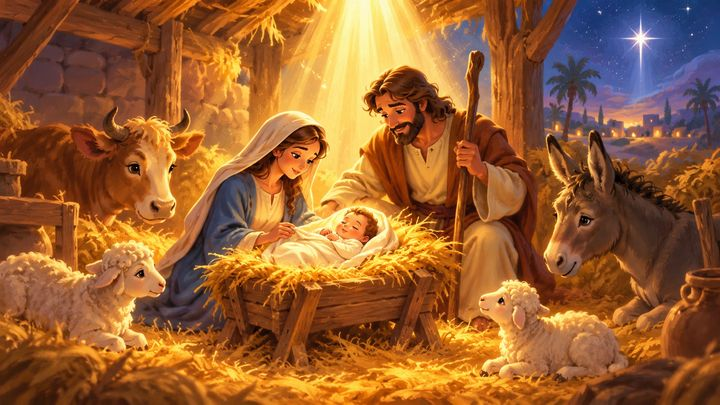
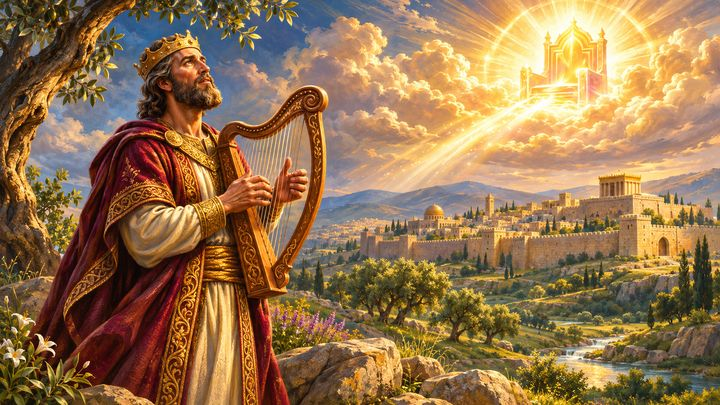
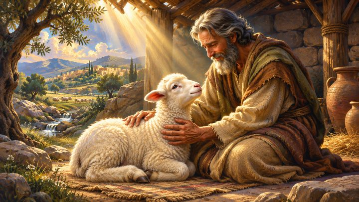
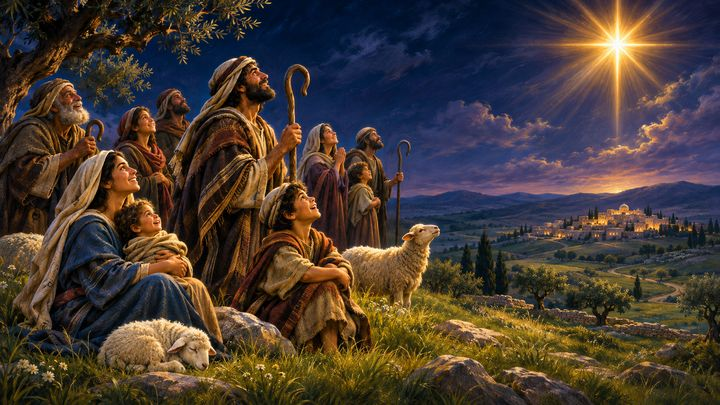

← Hope Kids 台中分部
核心問題
這一課在講什麼
上帝是信實守約的天父。雖然人類一次又一次因罪而跌倒破壞關係，但神藉著立約與先知預言，一步步推進拯救計畫，最終在耶穌基督降生時成就了永不落空的救贖。12 月課程範例〈舊約的故事：四個約與耶穌降生的預言〉神學定位
上週（11/29，Forward 第四課）孩子看到耶穌「本有神的形像……反倒虛己，取了奴僕的形像，成為人的樣式」（腓 2:6-7）。這週是《Jesus 耶穌系列》第一課，倒帶回到好幾千年前：耶穌要來，不是突然決定的。神透過挪亞、亞伯拉罕、摩西、大衛四個約，和以賽亞等先知的預言，一路預備祂的來臨。
課程範例給的方向是：破除「上帝離我很遠」或「神會忘記承諾」的疑惑，建立對天父信實守約的信心；並學習成為「守信用、有信實」的小勇士。
神的屬性與人的回應
取自課程範例一、三、五
守約的神創 9:16；申 7:9屬性
彩虹出現時神說「我看見，就要記念」。祂說到，就做到，直到千代。
全能的神創 17:1屬性
亞伯蘭沒有孩子、年紀老邁，神說「我是全能的神」。人做不到的，神做得到。
先救我們出 20:2作為
神先把以色列人從埃及救出來，才給他們十誡。律法是愛的保護，不是換取愛的條件。
永遠的王撒下 7:16作為
大衛的家要出一位國位直到永遠的王，以賽亞說祂是一個嬰孩。這位王就是耶穌。
信靠守信範例應用回應
相信天父的應許；等候的時候不放棄禱告；學天父說話算話。
這一課的 15 張圖是一條路：#01 金色的路通向遠方的一顆星，#14、#15 那顆星停在伯利恆上空。中間每個約都有一樣看得見的東西：彩虹（#04-05）、星星（#06）、石版（#09）、寶座（#10-11）。講故事時可以請孩子「找記號」。
課程指標
知識
說得出四個約和它們的記號：彩虹（挪亞）、星星（亞伯拉罕）、石版（摩西）、王冠（大衛）。
知道以賽亞在耶穌出生前大約七百年，就寫下「有一嬰孩為我們而生」，記得這嬰孩的四個名字。
知道這四個約最後都指向耶穌。
態度
天父說話算話，我可以放心信靠祂。
等候的時候，我不放棄禱告。
我也學天父，答應的事認真做到。
反思
天父應許永不落空，千代守約愛不改變。
神的應許，不論有多少，在基督都是是的。
我有沒有覺得神忘記我了？我答應別人的事，有沒有做到？
故事四篇章
取自課程範例三
篇章一 · 彩虹與星星｜創 6-17｜#01-07
彩虹與大族：
挪亞與亞伯拉罕
- 大水過後，神用彩虹和挪亞立約；神帶亞伯蘭數星星，應許後裔像星那樣多、萬國因他得福。
- 亮光：神主動跨出第一步與人立約，展現永不放棄的愛。
- 第一關〈方舟有多大？〉、第二關〈數星星〉；鑰匙 1 彩虹、鑰匙 2 星星。
篇章二 · 石版與王冠｜出 19-20；撒下 7｜#08-11
西奈山與榮耀國度：
摩西與大衛
- 神先救以色列人出埃及，在西奈山頒布十誡；神應許大衛的國位直到永遠。
- 亮光：律法是出於愛的保護；大衛之約預告一位永恆的君王。
- 第三關〈保護還是綁住？〉、第四關〈誰蓋房子給誰？〉；鑰匙 3 石版、鑰匙 4 王冠。
篇章三 · 黑暗中的光｜賽 9；彌 5:2｜#12-14
先知的預言：
在黑暗中仰望
- 以賽亞預言「有一嬰孩為我們而生」，彌迦說救主生在伯利恆；之後四百年沒有新的先知。
- 亮光：先知的預言是黑暗中的明燈；漫長的等待中，神的計畫仍一步步進行。
- 互動〈七百年前的劇透〉、〈四百年的安靜〉（關燈）。
篇章四 · 應許永不落空｜林後 1:20｜#15
四個約：
完美指向耶穌
- 四把鑰匙打開寶盒，裡面是耶穌降生。舊約的故事不是結束，是預備好舞台，迎接耶穌。
- 亮光：耶穌是所有應許的總解答。
- 終關〈打開應許寶盒〉，全班高呼「天父的應許，永不落空！耶穌來了！」
關聯經文
和合本 · 上課前請對照手邊譯本
因有一嬰孩為我們而生；有一子賜給我們。政權必擔在他的肩頭上；他名稱為「奇妙策士、全能的神、永在的父、和平的君」。以賽亞書 9:6 · 課程範例主題經文
我把虹放在雲彩中，這就可作我與地立約的記號了。……虹必現在雲彩中，我看見，就要記念我與地上各樣有血肉的活物所立的永約。創世記 9:13, 16 · 鑰匙 1
於是領他走到外邊，說：「你向天觀看，數算眾星，能數得過來嗎？」又對他說：「你的後裔將要如此。」亞伯蘭信耶和華，耶和華就以此為他的義。創世記 15:5-6 · 第二關
我與你立約：你要作多國的父。從此以後，你的名不再叫亞伯蘭，要叫亞伯拉罕，因為我已立你作多國的父。創世記 17:4-5 · 鑰匙 2
我是耶和華—你的神，曾將你從埃及地為奴之家領出來。出埃及記 20:2 · 十誡的第一句 · 鑰匙 3
你壽數滿足、與你列祖同睡的時候，我必使你的後裔接續你的位；我也必堅定他的國。……你的家和你的國必在我面前永遠堅立。你的國位也必堅定，直到永遠。撒母耳記下 7:12, 16 · 鑰匙 4
在黑暗中行走的百姓看見了大光；住在死蔭之地的人有光照耀他們。……他必在大衛的寶座上治理他的國，……從今直到永遠。以賽亞書 9:2, 7 · #14 關燈、#11 → #12 的橋
伯利恆以法他啊，你在猶大諸城中為小，將來必有一位從你那裡出來，在以色列中為我作掌權的。彌迦書 5:2 · 劇透一
神的應許，不論有多少，在基督都是是的。哥林多後書 1:20 · #15
亞伯拉罕的後裔，大衛的子孫，耶穌基督的家譜。馬太福音 1:1 · 新約的第一句
他要為大，稱為至高者的兒子；主神要把他祖大衛的位給他。他要作雅各家的王，直到永遠；他的國也沒有窮盡。路加福音 1:32-33 · 12/13 的經文，#11 先預告
教學界線
課程範例七＋兩條補充
不要這樣講「你要乖乖守規矩，神才會愛你，才會遵守祂的約。」
正確方向約的根基是神無條件的恩典與愛。神先把以色列人從埃及救出來，才給他們十誡（出 20:2）。律法是愛的保護，不是換取愛的條件（課程範例界線 1）。
正確方向「我看見，就要記念」（創 9:16）是神用人聽得懂的話保證：我一定做到。彩虹是給我們看的記號：神沒有忘記。（補充）
不要這樣講「你爸爸媽媽答應你的事沒做到，就是不好。」
正確方向有的孩子經歷過大人失約、家庭變故。不評斷孩子的家人，而是告訴他：「地上的承諾可能會變，但天父對你的愛與承諾永遠不會改變。」（課程範例牧養提醒）
正確方向四百年沒有新的先知，不代表神不在。「及至時候滿足，神就差遣他的兒子」（加 4:4）。等候的時候，神的計畫仍在進行（課程範例第三章亮光；補充）。
重點剖析
給老師的背景
「約」是神主動的約定。創世記 15 章立約時，只有「冒煙的爐並燒著的火把」從劈開的肉塊中間經過（15:17），亞伯蘭沒有走：等於神自己擔保這個約。聖經分成「舊約」「新約」，用的就是這個字；先知預告神要「另立新約」（耶 31:31），耶穌在最後的晚餐說「這杯是用我血所立的新約」（路 22:20）。今天的四個約，是一路走向新約的路。
四個記號的出處。彩虹是經文明說的「記號」（創 9:12-13）。星星是應許的比喻（創 15:5）。石版上寫的是「約的話」（出 34:28），申命記直接叫它「立約的版」（申 9:9）。王冠是我們替大衛之約選的記號，經文說的是「國位」（撒下 7:13, 16）。
經文範圍和故事圖不完全一樣。課程範例列的經文是創 6、9、15、17、撒下 7、賽 9:6；摩西之約不在經文範圍裡，但範例第二章有講，故事圖 #08-09 也有，所以照範例講。#02-03 的創造和離開伊甸園，台詞用創 3:15「女人的後裔」當作應許之路的起點。#13（撫摸小羊的老人）沒有對應的範例段落，台詞用賽 53:7 的羊羔、彌 5:2 的伯利恆來講。#10-11 背景裡的聖殿是畫家的想像：大衛時代聖殿還沒蓋，是他的兒子所羅門後來蓋的（撒下 7:13）。
「後裔」是單數。保羅讀創世記的應許，說神「並不是說『眾子孫』，指著許多人，乃是說『你那一個子孫』，指著一個人，就是基督」（加 3:16）；又說屬基督的人「就是亞伯拉罕的後裔」（加 3:29）。#07「你和我也算在那片星星裡」就是從這裡來的。
大衛的「家」是雙關。大衛想為神蓋「殿」，神說要為大衛建立「家室」，就是王朝，希伯來文是同一個字。所羅門蓋了聖殿，但「直到永遠」的國位最後指向耶穌：天使說「主神要把他祖大衛的位給他……他的國也沒有窮盡」（路 1:32-33）；新約第一句就是「亞伯拉罕的後裔，大衛的子孫，耶穌基督的家譜」（太 1:1）。
以賽亞書 9 章的前後文。9:2「在黑暗中行走的百姓看見了大光」是 #14 關燈、#15 開箱見光的根據，馬太福音 4:16 引用它，說應驗在耶穌身上。9:7「他必在大衛的寶座上……直到永遠」把以賽亞的嬰孩和大衛之約接起來，是 #11 到 #12 的橋。
系列的位置。《Jesus 耶穌系列》12 月四週：四個約與預言（12/6）→ 施洗約翰出生與天使報信（12/13，路 1）→ 耶穌降生（12/20）→ 耶穌受洗、開始傳道（12/27）。今天是序曲：#15 先讓孩子看見「答案是耶穌」，降生的故事 12/20 再完整講。
課程流程
20:00 總長
| 起 | 長度 | 單元 | 內容 |
|---|
| 00:00 | 1'00" | 開場與前情提要
#00 · 腓 2:6-7 |
- 拿出用四條封條封住的應許寶盒，白板畫好金色的「應許之路」：「要打開它，需要四把金鑰匙，鑰匙藏在今天的故事裡。」
- 放上週的故事圖〈耶穌謙卑成為人〉，問：「耶穌為什麼要來到世界上？」
- 帶出：耶穌要來，是神好幾千年前就約好的。台詞見分鏡 #00。
|
| 01:00 | 11'55" | 經文故事＋闖關
15 幀 · 4 關 |
- 依序播放 15 張故事圖，台詞見下方，每幀標了時間預算和屬於哪一把鑰匙。
- 四道關卡：#04〈方舟有多大？〉、#06〈數星星〉、#09〈保護還是綁住？〉、#10〈誰蓋房子給誰？〉；兩個互動：#13〈七百年前的劇透〉、#14〈四百年的安靜〉。玩法見下方「四把金鑰匙」。
- 四把鑰匙：#05 彩虹、#07 星星、#09 石版、#11 王冠。每把都是一個 ★ 鑰匙問題，答對的孩子上台貼鑰匙、撕一條封條。
- #15 開箱：燈還暗著時打開寶盒，LED 燈亮起，拿出耶穌降生圖卡；可接故事總結頁，最後全班一起喊「天父的應許，永不落空！耶穌來了！」
- 來不及時砍 #02、#08（共省 45 秒）。#05、#07、#09、#11、#12、#14、#15 不能砍，鑰匙、關燈和開箱是一條線。
|
| 13:00 | 7'00" | 手作與禱告
課程範例六 |
- 🌈〈彩虹永約〉立體相框：彩虹底板從剛打開的寶盒裡拿出來發 → 黏土搓成長條，沿彩虹弧線貼上 → 兩端黏上棉花雲 → 中間寫上「天父應許，永不落空！」→ 立起來，帶回家放在床頭。
- 只有 7 分鐘，底板請先剪好、黏土先分成小球（或改用彩色紙條），金句可以先印成貼紙。
- 課程結束禱告（課程範例）：「親愛的天父，謝謝祢是那位守約施慈愛的神！從挪亞的彩虹、亞伯拉罕的繁星、摩西的十誡到大衛的王國，祢千百年來從來沒有忘記對我們的愛。主耶穌，謝謝祢來到世上，成就了天父所有的應許，讓我能成為祢最寶貴的孩子。求聖靈幫助我，學習祢的信實，做一個說話算話、有愛心、不放棄禱告的小勇士。奉主耶穌的名求，阿們！」
- 帶孩子一句一句跟唸的短版（補充）：「天父，謝謝祢說話算話。謝謝祢差耶穌來。求祢幫助我，也學祢說話算話。阿們。」
- 本週任務（課程範例應用 1、2）：每天早上跟天父說「謝謝祢應許永遠不離開我」；練習說話算話，答應幫忙的事認真做到。
|
| 20:00 | — | 教材：應許寶盒（盒子＋四條封條＋LED 電子蠟燭＋耶穌降生圖卡）、四把金鑰匙、白板與金色筆（或緞帶、黃色紙膠帶）、劇透卡三張、手電筒、彩虹底板、超輕黏土、棉花、彩色筆、白膠或雙面膠。道具都在道具檔裡，可以直接印。 |
四把金鑰匙
課程範例第四章的寶盒 · 鑰匙藏在故事裡
課程範例說：「這四個約就像四把金鑰匙，最終通通指向同一個人：主耶穌基督！」開場拿出一個用四條封條封住的應許寶盒。故事每講完一個約，就問一個鑰匙問題，答對的孩子上台唸鑰匙、把鑰匙貼在白板的應許之路上，撕掉一條封條。四條都撕掉了，寶盒卻要等到「黑暗中的大光」出現才打開，裡面是耶穌。
第一把 · #05 · 挪亞之約
彩虹
★ 神跟挪亞約定了什麼？
答案：不再用洪水毀滅大地
鑰匙上的字：「不再有洪水毀壞地了。」創 9:11
第二把 · #07 · 亞伯拉罕之約
星星
★ 神應許亞伯拉罕什麼？
答案：後代像星星一樣多／作多國的父／賜給他一塊地
鑰匙上的字：「數算眾星……你的後裔將要如此。」創 15:5
第三把 · #09 · 摩西之約
石版
★ 神先做了什麼，才給他們十誡？
答案：把他們從埃及救出來
鑰匙上的字：「我是耶和華你的神，曾將你從埃及地為奴之家領出來。」出 20:2
第四把 · #11 · 大衛之約
王冠
★ 神應許大衛什麼？
答案：他的家要出一位永遠的王
鑰匙上的字：「你的國位也必堅定，直到永遠。」撒下 7:16
白板上的應許之路
創造起點 · 創 3:15
挪亞很久以前
亞伯拉罕主前約 2000 年
摩西主前約 1400 年
大衛主前約 1000 年
以賽亞主前約 700 年
四百年沒有新的先知
耶穌應許成就
每貼一把鑰匙，就在下面寫上年代。跟孩子說「耶穌出生前兩千年」比「主前」好懂。孩子會看到：這條路走了兩千多年，神一次都沒有忘記。
第一關 · 彩虹｜#04｜約 25 秒
方舟有多大？
- 玩法：老師伸出手臂示範「一肘」（手肘到中指尖），問方舟 300 肘有多長：A 一間教室 B 一台遊覽車 C 比一個足球場還長。
- 揭曉：答案是 C：長約 135 公尺，高約四層樓。
- 帶出：一滴雨都還沒下，挪亞就照神的話造方舟（創 6:22）。
第二關 · 星星｜#06｜約 20 秒
數星星
- 玩法：放 #06 星空圖，全班 10 秒數星星。
- 揭曉：數不完。這正是神出給亞伯蘭的題目：「你向天觀看，數算眾星，能數得過來嗎？」（創 15:5）
- 帶出：那時候他一個孩子都沒有，還是相信神（創 15:6）。
第三關 · 石版｜#09｜約 20 秒
保護還是綁住？
- 玩法：老師說三個規定，覺得是「保護」就打開手掌、「綁住」就握拳：山路旁的護欄、游泳池「不可奔跑」、過馬路要牽手。
- 揭曉：三個都是保護。
- 帶出：十誡第一句是「我曾將你從埃及地為奴之家領出來」：神先救，再教怎麼活（出 20:2）。
第四關 · 王冠｜#10｜約 20 秒
誰蓋房子給誰？
- 玩法：大衛想為神蓋房子，神怎麼回答？A「好啊」 B「不用了」 C「我要為你建立一個家」，孩子用手指比 1、2、3 投票。
- 揭曉：答案是 C：「我耶和華應許你，必為你建立家室。」（撒下 7:11）
- 帶出：神送大衛的「家」，是一個直到永遠的王國。
互動 · 預言｜#13｜約 40 秒
七百年前的劇透
- 玩法：老師唸三張劇透卡，全班搶答是聖誕故事的哪一部分。
- 揭曉：伯利恆（彌 5:2）、童女生子（賽 7:14）、羊羔（賽 53:7）。
- 帶出：神的計畫幾百年前就寫好了，一步一步照著發生。
互動 · 等候｜#14｜約 15 秒
四百年的安靜
- 玩法：助教關燈、拉上窗簾，全班安靜 10 秒。
- 揭曉：10 秒就很久，他們等了四百年。
- 帶出：等候的時候，他們還是一直抬頭看（賽 9:2）。
終關 · 耶穌｜#15｜約 40 秒
打開應許寶盒
- 玩法：燈還暗著，請四位拿過鑰匙的孩子一起掀開盒蓋，LED 燈亮起，老師拿出耶穌降生圖卡。
- 揭曉：四把鑰匙打開的是耶穌。
- 帶出：「在黑暗中行走的百姓看見了大光」（賽 9:2）；神的應許「在基督都是是的」（林後 1:20）。
準備清單
- 應許寶盒：鞋盒或禮物盒，包上金色或聖誕包裝紙，盒蓋用四條封條封住（道具檔第 2 頁）。
- 寶盒裡：LED 電子蠟燭一盞（上課前打開再蓋上）、耶穌降生圖卡（故事圖 #15 彩色印 A4）、手作用的彩虹底板。不要放糖果或禮物，寶盒裡最好的是耶穌。
- 四把金鑰匙：道具檔第 1 頁，最好印在黃色或金色紙上，沿外框剪下，背面先貼好紙膠帶。
- 應許之路：白板從左到右畫一條長路，終點畫一顆星（或貼金色緞帶、黃色紙膠帶），下方留位置寫年代。
- 劇透卡三張：道具檔第 2 頁，答案倒著印在卡片下緣。第一到第四關不需要道具。
- 燈和窗簾：先找好開關，請一位助教負責；手電筒一支備用，教室太亮時用它照著開箱。
- 手作：彩虹底板（道具檔第 3 頁印在西卡紙上，一張兩個，先剪好）、超輕黏土（先分成小球，或改用彩色紙條）、棉花、彩色筆、白膠或雙面膠、立架（卡紙對摺即可）。
下載道具檔（PDF，3 頁）：第 1 頁四把金鑰匙，第 2 頁寶盒封條和劇透卡，第 3 頁彩虹相框底板。
分鏡台詞
15 幀 · 4 關 · 11:55

001:00前情提要腓 2:6-7★ 快問快答寶盒登場
上禮拜，耶穌來了
開場｜應許寶盒桌上放一個用四條封條封住的寶盒。白板從左到右畫一條長長的金色「應許之路」，終點畫一顆星。
（指寶盒）今天這裡有一個應許寶盒，被四條封條封住了。要打開它，需要四把金鑰匙。鑰匙就藏在今天的故事裡，要仔細聽才找得到。
先看這張圖，記得嗎？上禮拜我們看到：耶穌本來是神，住在天上，可是祂願意放下一切，變成一個小嬰孩，躺在馬槽裡。
★ 快問快答：耶穌為什麼要來到世界上？
（等一兩個回答）你們知道嗎？耶穌要來，不是突然決定的。神在好幾千年前就約好了，而且說了一次又一次。今天我們就倒帶回去，把證據一個一個找出來。
腓立比書 2:6-7（上週故事）
010:30應許之路
一條很長的路
你看這條路，金色的，彎彎曲曲，一直走到好遠好遠，盡頭有一顆好亮的星星。這條路叫做應許之路。（指白板上的長路）
聖經分成哪兩大部分？（舊約、新約）「約」就是約定。今天我們走舊約這一段，路上神跟人做了四個很重要的約定，就是四把金鑰匙。路的盡頭是什麼？走完就知道。
課程範例〈前情提要：四個神秘金鑰〉
020:20可略應許之路
起點：美好的世界
路的起點在很久很久以前。神創造了一個好美的世界：有河、有花、有小鹿。神看著一切都甚好。那時候，人和神好親近。
創世記 1:31；2:8-10
030:35應許之路第一個應許
神沒有放棄
可是後來，人沒有聽神的話，罪進到世界裡，人和神的關係破掉了。你看，亞當和夏娃要離開這個園子，夏娃在哭，前面的路好暗。
但是神沒有放棄。就在那時候，神說了第一個應許：有一天，女人的後代會打敗那條騙人的蛇。意思是：有一天，會有一位救主來。應許之路，就從這裡開始。
創世記 3:15, 23
040:50彩虹第一關
方舟有多大？
過了很多年，地上的人越來越壞，到處欺負人、打架，神很難過。只有一個人不一樣，他叫挪亞。神對他說：「你要造一艘大船，叫方舟。我要與你立約。」這是聖經裡第一次出現「約」這個字！
第一關｜方舟有多大？老師伸出手臂，指著手肘到中指尖：「這就是一肘。」神說方舟要長 300 肘。請孩子猜：A 像一間教室 B 像一台遊覽車 C 比一個足球場還長。
答案是 C！長大約 135 公尺，比一個足球場還長；高大約有四層樓。
那時候，一滴雨都還沒下喔。可是聖經說：「凡神所吩咐的，他都照樣行了。」挪亞相信神說的話。
創世記 6:13-22

050:50★ 必停．不可略彩虹鑰匙 1
彩虹是神的印章
大水來了。方舟裡，挪亞一家八個人和動物都平安。大水退了，他們走出方舟，第一件事就是感謝神。
這時候天上出現了……（彩虹！）神說：「我把虹放在雲彩中，這就可作我與地立約的記號了。」以後不再有洪水毀壞地了。神還說，虹出現的時候，「我看見，就要記念」。
彩虹就像神蓋的印章：我說到，就做到。
★ 鑰匙問題：神跟挪亞約定了什麼？
第一把鑰匙｜彩虹請答對的孩子上來，唸鑰匙上的字，把鑰匙貼在白板的應許之路上，再撕掉寶盒上的彩虹封條。
創世記 7:13；8:20；9:11-16
060:50星星第二關
數得完嗎？
又過了很多年，神揀選了一個人，叫亞伯蘭。有一天晚上，神帶他走到帳棚外面。
第二關｜數星星放這張星空圖，給全班 10 秒數天上的星星：「預備，開始！」
（10 秒）數完的舉手？數不完，對不對？其實神就是這樣考亞伯蘭的：「你向天觀看，數算眾星，能數得過來嗎？……你的後裔將要如此。」
可是那時候，亞伯蘭有幾個孩子？一個都沒有，而且他已經很老了。聖經說：亞伯蘭信耶和華。
創世記 15:2-6
070:45★ 必停．不可略星星鑰匙 2
多國的父
神跟他立約：「這一大片地，我要賜給你的後代。」到他九十九歲，神又說：「我是全能的神，你要作多國的父。」還把他的名字改成亞伯拉罕，意思就是「多國的父」。
神說，地上萬國都要因他的後代得福。這個後代，後來指的就是耶穌。所以今天信耶穌的你和我，也算在那片星星裡面喔！
★ 鑰匙問題：神應許亞伯拉罕什麼？
第二把鑰匙｜星星答對的孩子上來唸鑰匙、貼上應許之路，撕掉星星封條。
創世記 15:18；17:1-8；22:18；加拉太書 3:16, 29
080:25可略石版
老鷹的翅膀
亞伯拉罕的後代真的越來越多，成了以色列人。後來他們在埃及當奴隸，被欺負了好久。神早就告訴過亞伯拉罕會這樣，也說會救他們出來。
神派摩西帶他們走出埃及，來到西奈山。神說：「我如鷹將你們背在翅膀上，帶來歸我。」
創世記 15:13-14；出埃及記 19:4

090:55★ 必停．不可略石版第三關鑰匙 3
保護還是綁住？
在西奈山上，神把十條誡命寫在兩塊石版上，交給摩西。這就是神和以色列人立的約。
第三關｜保護還是綁住？老師說三個規定，覺得是「保護」就打開手掌，覺得是「綁住」就握拳：山路旁的護欄／游泳池「不可奔跑」／過馬路要牽手。
都是保護，對不對？十誡也一樣。注意聽十誡的第一句：「我是耶和華你的神，曾將你從埃及地為奴之家領出來。」神先救他們，才教他們怎麼活。不是「守規矩，神才愛你」，是「神愛你，所以告訴你怎樣活最好」。
★ 鑰匙問題：神先做了什麼，才給他們十誡？
第三把鑰匙｜石版答對的孩子上來唸鑰匙、貼上應許之路，撕掉石版封條。
出埃及記 20:1-2；31:18；34:28

100:45王冠第四關
誰蓋房子給誰？
又過了好幾百年，以色列有一位很有名的王：大衛。還記得嗎？他小時候是放羊的。神說：「我從羊圈中將你召來，立你作王。」
有一天大衛想：「我住在漂亮的宮殿，神的約櫃卻在帳棚裡。我要為神蓋一間房子！」
第四關｜誰蓋房子給誰？「你猜神怎麼回答？」A「好啊，謝謝你！」 B「不用了。」 C「不，是我要為你建立一個家。」請孩子用手指比 1、2、3 投票。
答案是 C！神說：「我耶和華應許你，必為你建立家室。」大衛想送神一間房子，神反過來送大衛一個「家」。
撒母耳記下 7:1-2, 8, 11

110:40★ 必停．不可略王冠鑰匙 4
直到永遠的王
神說的「家」，不是房子，是大衛的家族：「你的後代會接續你作王，你的國位也必堅定，直到永遠。」
直到永遠喔！可是大衛後來死了，後面的王也一個一個死了。那位「永遠的王」到底是誰？先記住這個問題。偷偷告訴你們：下禮拜，天使會對一個女孩說一句話，跟這句幾乎一模一樣。
★ 鑰匙問題：神應許大衛什麼？
第四把鑰匙｜王冠答對的孩子上來唸鑰匙、貼上應許之路，撕掉最後一條封條。
撒母耳記下 7:12-16；路加福音 1:32-33（12/13 預告）
120:55★ 必停．不可略黑暗中的光主題經文
一個嬰孩，四個名字
四條封條都撕掉了！可是寶盒還不能開，因為神應許的那一位還沒有來。後來神派了很多先知對大家說話，其中一位叫以賽亞。在耶穌出生前大約七百年，他寫下了一段很驚人的話：
「因有一嬰孩為我們而生；有一子賜給我們。……他名稱為奇妙策士、全能的神、永在的父、和平的君。」
★ 這個嬰孩有四個名字，跟我做動作記起來：奇妙策士（手指點點頭）、全能的神（雙手舉起比力氣）、永在的父（雙手抱住自己）、和平的君（雙手合起來放胸口）。再快一次！
以賽亞還說，這個孩子要坐在大衛的寶座上，直到永遠。跟第四把鑰匙接起來了！
以賽亞書 9:6-7（課程範例主題經文）

131:00黑暗中的光互動劇透卡
七百年前的劇透
先知們還寫了好多「劇透」，在耶穌出生前好幾百年，就把聖誕故事的重點先說出來了！
互動｜七百年前的劇透老師唸三張劇透卡，全班搶答：這是聖誕故事的哪一部分？
劇透一：「伯利恆啊……將來必有一位從你那裡出來。」（耶穌出生的地方！）你看圖的後面，那個小城就是伯利恆。
劇透二：「必有童女懷孕生子，給他起名叫以馬內利。」（馬利亞生耶穌！）以馬內利的意思是「神與我們同在」。
劇透三：「他像羊羔……」你看這隻小羊，好溫柔、好安靜。神要派來的王，不是兇巴巴的王，是像小羊一樣溫柔、願意為我們受苦的王。
彌迦書 5:2；以賽亞書 7:14；53:7；馬太福音 1:23

140:40不可略黑暗中的光互動關燈
四百年的安靜
先知說完這些話以後，就再也沒有新的先知了。整整四百年，沒有人再聽到神新的話。
互動｜四百年的安靜請助教關燈、拉上窗簾。全班安靜 10 秒，一點聲音都不出。
（默數 10 秒）才 10 秒就好久，對不對？他們等了四百年。可是你看這些人，他們沒有放棄，一直抬頭看，一直等。以賽亞說過：「在黑暗中行走的百姓，看見了大光。」
（燈先不要開）四把鑰匙都找齊了。我們來打開寶盒！
以賽亞書 9:2；加拉太書 4:4

151:55不可略耶穌終關收尾
寶盒裡的光
終關｜打開應許寶盒燈還暗著。請四位拿過鑰匙的孩子一起掀開盒蓋，盒子裡的 LED 燈亮起來；老師拿出耶穌降生圖卡。
（開箱）哇，有光！四把鑰匙打開的寶盒裡，是誰？（耶穌！）
（開燈，放這張圖）原來，神的應許一個一個都實現在耶穌身上：
- 彩虹：神不放棄這個世界。耶穌來，因為神愛世人。
- 星星：萬國要因亞伯拉罕的後代得福。那個後代就是耶穌。
- 石版：神的話刻在石頭上。耶穌來，要把神的話寫在我們心裡。
- 王冠：大衛的家要出一位永遠的王。就是耶穌。
聖經說：「神的應許，不論有多少，在基督都是是的。」神答應過的每一件事，在耶穌身上都說「是！」新約聖經的第一句話就是：「亞伯拉罕的後裔，大衛的子孫，耶穌基督……」今天的兩把鑰匙，就寫在新約的第一句話裡！
我們一起大聲說：「天父的應許，永不落空！耶穌來了！」
寶盒裡還有東西……（拿出彩虹底板）每次看到彩虹，就記得：天父說話算話。我們來做彩虹相框！
可以投影〈故事總結〉頁四把鑰匙那一段可以直接用故事總結頁帶：四個記號一次點亮一個，最後全班一起喊。
約翰福音 3:16；加拉太書 3:16；哥林多後書 3:3；路加福音 1:32-33；哥林多後書 1:20；馬太福音 1:1
給孩子的話
依課程範例 take-away 與應用
天父應許永不落空，千代守約愛不改變；緊緊抓住耶穌的愛，做個信實勇敢的小勇士！課程範例 · 課後 Take-away
給大班老師的引導建議
含教材的教學界線
01四把鑰匙，讓四個不同的孩子上台。四次鑰匙問題是四次上台的機會，優先給還沒發言的孩子。答案說得不完整也算，例如「不會再淹水」就可以。鑰匙上的字比較長，老師可以陪著一起唸。
02應許之路要一路留在白板上。每貼一把鑰匙，就在下面寫上年代：亞伯拉罕約兩千年、摩西約一千四百年、大衛約一千年、以賽亞約七百年（都是「耶穌出生前」），最後是四百年的安靜，終點是耶穌。下課前整條路還在，孩子一眼就看得到：這條路走了兩千多年，神一次都沒有忘記。
03第 12 幀不能砍。主題經文以賽亞書 9:6 和四個名字的動作在這裡。手作時可以再做一次動作，下課前再一次，孩子就記住了。
04關燈前先確認場地。請一位助教負責燈和窗簾。有怕黑的孩子，就不要全暗，留一盞小燈；安靜 10 秒就好，不要拉長。教室太亮關不暗的話，改用手電筒照著開箱那一刻。
05開箱的光要先準備好。LED 電子蠟燭上課前先打開，再蓋上盒蓋，放二十分鐘沒問題。開箱前先說「看到的人先不要說」，讓四位拿鑰匙的孩子一起掀開。
06寶盒裡不放糖果或禮物。只放 LED 燈、耶穌降生圖卡和彩虹底板，免得孩子聽成「答對就有獎品」。寶盒裡最好的東西，是耶穌。
07孩子問「洪水淹死那麼多人和動物，神是不是很兇？」照聖經說：地上滿了強暴，神心中憂傷（創 6:6, 11）；神容忍等待了很久（彼前 3:20），也為挪亞一家預備了方舟；而且神親口應許以後不再這樣做，這就是彩虹。洪水的經過簡短帶過，不需要描述細節。
08孩子問「神會忘記嗎？為什麼要彩虹提醒祂？」可以說：「神不會忘記。神用我們聽得懂的話告訴我們：我一定會做到。彩虹是讓我們每次看見，都想起神沒有忘記。」若孩子提到生活中其他的彩虹圖案，簡單說「聖經裡彩虹第一次出現，是神立約的記號」就好，不展開討論。
09「說話算話」的應用不要變成檢討大會。班上可能有孩子經歷過大人失約、父母離異。不要問「誰的爸媽說話不算話」。用課程範例的牧養提醒：「地上的承諾可能會變，但天父對你的愛與承諾永遠不會改變，神是你最堅固的避難所。」
10第 13 幀的羔羊點到為止。說到「願意為我們受苦」就好，十字架的細節留給受難節。12/27 的經文（約 1:29）會出現「看哪，神的羔羊」，到時候可以接回來。
11前情提要只抓一件事。上週的「耶穌願意放下一切，成為人」（腓 2:6-7）。上週講的「活祭」今天不用重講，開場控制在一分鐘。
12時間快超過時的取捨順序：先砍第 02、08 幀（共省 45 秒）；再不夠，第三關只說一個例子、第一關直接公布答案。不要砍第 05、07、09、11（四把鑰匙）、12（主題經文）、14、15（關燈和開箱）。
13跟下週接起來。12/13 的經文是路加福音 1 章。天使對馬利亞說「主神要把他祖大衛的位給他……他的國也沒有窮盡」（路 1:32-33），就是第四把鑰匙；撒迦利亞唱「記念他的聖約，就是他對我們祖宗亞伯拉罕所起的誓」（路 1:72-73），就是第二把鑰匙。#11 已經先預告，可以告訴 12/13 的故事老師。
14手作只有 7 分鐘。彩虹底板先剪好，超輕黏土先分成小球；七個顏色太多的話，用三、四個顏色或彩色紙條也可以。金句「天父應許，永不落空！」可以先印成貼紙。
15哪些是範例、哪些是另外編的。四個約、四大篇章、主題經文、四把金鑰匙打開寶盒、關燈點燈、全班高呼、應用、take-away、教學界線、手作與禱告文取自 12 月課程範例。標題《四把金鑰匙》、「彩虹 → 星星 → 石版 → 王冠 → 耶穌」、#00 用 11/29 的故事圖、#03 的創 3:15、應許之路和封條、四道關卡、七百年前的劇透、#13 的羊羔與伯利恆、#15 的林後 1:20 與太 1:1、短版禱告，是依範例方向另外編的。Canva 上 12/6 大班的投影片目前內容還是舊的〈建造會幕〉，所以流程表後 7 分鐘先照課程範例的手作與禱告排；投影片改好後，再把 #15 的交棒句對齊。